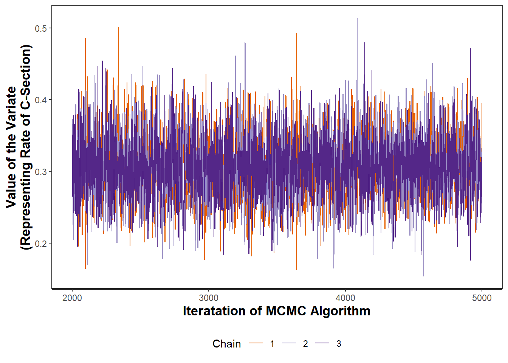

| Posterior Mean | Posterior Median | 95% Credible Interval | ESS | Shrink Ratio |
|---|---|---|---|---|
| 0.307 | 0.306 | (0.224, 0.397) | 3495.544 | 1.001 |
19 Assessing MCMC Samples
The reliability of any statistical analysis depends on the quality of the data obtained; as a result, any good analysis requires that we give some thought to the data we have obtained. Similarly, we must consider the derivation of our prior distribution and the reasonableness of our model for the likelihood. When our analysis also includes the use of an MCMC algorithm, we should, at a minimum, also investigate that certain assumptions about the resulting sample are reasonable before proceeding. This chapter briefly discusses some checks that are done on the posterior sample to determine its suitability for answering questions.
There are essentially four considerations when examining the output of any MCMC algorithm.
Assessment of an MCMC Algorithm
Before using a sample from an MCMC algorithm, the following should be considered:
- The posterior distribution is proper.
- The resulting Markov Chains converged.
- Sensitivity of the algorithm to starting values.
- The correlation between generated variates is negligible.
Software which implements MCMC algorithms typically generate output for assessing the reliability of the resulting sample. In this chapter, we focus on navigating this output for assessment.
An improper posterior distribution cannot provide valid inference. Unfortunately, an MCMC algorithm will generate a sequence of values, even if the target distribution is improper. If the combination of the likelihood and prior specified would result in an improper posterior, the resulting sample from the MCMC algorithm is useless. In general, software is unable to determine if the target distribution is improper; therefore, it is up to the analyst to analytically determine if the posterior distribution is proper. The simplest way to ensure that we have a proper posterior distribution is to use a proper prior distribution.
Ensuring a Proper Posterior
If we use a proper prior, we are guaranteed a proper posterior.
Example 19.1 (C-section Deliveries Continued) Example 9.1 introduced a study, a component of which includes estimating the probability of a mother undergoing a C-section delivery at a particular hospital.
While MCMC methods are not required for this example, as Example 11.2 illustrates, it is possible to use and MCMC algorithm to address this question. Before even writing MCMC code, explain why we can be confident that the posterior is proper in this case.
Solution. Our prior information was represented using a Beta distribution, which is a proper distribution. Therefore, we know the posterior will also be proper.
Recall that we “seed” an MCMC algorithm with an initial value. Only after a large number of iterations is the algorithm generated values from the stationary distribution — the distribution to which the process essentially converges. Therefore, we must ensure we have allowed the algorithm to run long enough that the process has converged to the stationary distribution — that the variates generate behave as if they are drawn from the posterior distribution. A trace plot showing the value of the generated variates at each step of the algorithm can be used to visually assess convergence.
You are essentially looking for whether the chain eventually settles in a particular region of the parameter space; this should not be confused with the chain reaching a specific value. As we are looking for a stationary distribution, we expect the variates generated to bounce around (according to the stationary distribution); however, if the chain has some signal to it (trending in location or spread), that is unexpected. It should eventually look like noise around some central point.
Often, we eliminate the early part of a chain, the discarded portion known as the “warm-up” (or “burn-in”) period. That is, we might remove the first 1000 variates from the resulting Markov chain because we expect the chain is still moving toward the stationary distribution during this time period. The variates after the burn-in period behave more like a sample from the stationary distribution and are retained for analysis.
Graphically Assessing Convergence of MCMC Chains
Create a plot of the values generated (after eliminated the values from the burn-in period) against the order in which they were generated. This is known as a “trace plot.” If the chain has converged, the plot should not have any trends in the location or spread over time.
Example 19.2 (C-section Deliveries Continued) Example 9.1 introduced a study, a component of which includes estimating the probability of a mother undergoing a C-section delivery at a particular hospital.
We used Stan to implement a Hamiltonian Monte Carlo to obtain a sample from the posterior distribution. We generated three chains (each seeded with a different initial value); each chain had 5000 iterations, with the first 2000 representing a burn-in. This provided a sample of size 9000 from the posterior distribution after combining the three chains.
Table 19.1 summarizes the sample generated by the MCMC algorithm. Figure 19.1 is a trace plot for each of the three chains. Comment on the convergence of each chain.

Solution. We do not notice any trends in the location or spread of any of the three chains after the burn-in period. Each of the chains seems to bounce around the value 0.3, and the spread stays relatively constant (values generated tend to be between 0.2 and 0.4).
As there are no trends in the location or spread, the samples generated by the algorithm are consistent with what we would expect if they had reached the stationary distribution.
In theory, the stationary distribution is the posterior distribution, we just need to run the algorithm long enough to get there. Practically, however, the distribution to which the algorithm converges could depend on the value used to seed the process. If that happens, then any results based on the sample are potentially biased. Therefore, we want to determine if the MCMC algorithm is sensitive to the chosen starting (initial) value. To do so, we seed the algorithm with multiple starting values, resulting in multiple chains. It is generally sufficient to consider three chains. Overlaying the trace plot from each chain allows us to assess whether the chains “mix” well. If the various chains are distinct, this suggests that the stationary distribution suggested by the algorithm varies according to the starting value, which means a stationary distribution was not really obtained.
In addition to the visual check, we can compute the “shrink factor.” Also known as the “potential scale reduction factor,” this is the ratio of the between-chain variability to the within-chain variability. If the chains are well mixed, this ratio should be near 1. If the ratio gets much larger than 1.1, it indicates a serious problem with the mixing.
Assessing Sensitivity of MCMC Algorithm to Starting Value
Seed the algorithm with three initial values. If the trace plots of the resulting chains are distinct — occupy different aspects of the parameter space — then your results are sensitive to the starting value. If the chains mix well, the chains are then combined to form a single sample for estimation.
Alternatively, a shrink factor above 1.1 indicates sensitivity to the starting value.
Example 19.3 (C-section Deliveries Continued) Example 9.1 introduced a study, a component of which includes estimating the probability of a mother undergoing a C-section delivery at a particular hospital.
Revisiting Example 19.2 above, assess the sensitivity of the algorithm to the initial value.
Solution. Notice that in Figure 19.1, the three chains overlap completely; in fact, it is difficult to distinguish one chain from another. This suggests the chains are mixing well as they occupy the same part of the parameter space.
Reported in Table 19.1, the shrink factor was estimated to be 1, which is consistent with our observations in the graphic above. There is no evidence the algorithm is sensitive to the initial value, and it seems reasonable to combine the variates from the three chains.
Recall that we expect our Markov chain to result in correlated variates. As a result, each variate does not contain as much unique information as we may believe. The “effective sample size” gives a crude measure of how much independent information there is within the chain. For example, we may generate 5000 iterates, but if the variates are highly dependent, the effective sample size may suggest we act as if only 100 iterates were generated.
Definition 19.1 (Effective Sample Size) The effective sample size (ESS) is given by
\[ESS = \frac{N}{1 + 2\sum_{k=1}^{\infty} ACF(k)}\]
where ACF is the auto-correlation function of degree \(k\).
Warning
When discussing MCMC procedures, it is common to use “sample size” to actually refer to the number of variates generated during the MCMC algorithm. We should not confuse the number of variates generated from the posterior with the number of observations in our data set.
If you want to measure something that is toward the center of the distribution (mean/median), the ESS need not be large. But, if you want to compute a tail probability (such as for a credible interval), you need a much larger ESS. Some texts recommend near 10000 variates from the posterior in order to reliably compute a highest posterior density interval, for example.
Assessing Independence of Variates
The effective sample size (ESS) takes into account the correlation between the variates and gives you an indication of how precise your results are. A small ESS suggests high correlation between the variates and indicates that your results are less reliable.
Example 19.4 (C-section Deliveries Continued) Example 9.1 introduced a study, a component of which includes estimating the probability of a mother undergoing a C-section delivery at a particular hospital.
Revisiting Example 19.2, assess the independence of the variates.
Solution. We see that while we generated 9000 (post burn-in) variates, the effective sample size is estimated to be just under 3500. This suggests that there is a relatively strong correlation between the observations; only every third variate generated is independent. However, the effective sample size still remains fairly large; so, we are confident in both our point estimates and any credible intervals generated.
While these four checks are somewhat universal, there is an additional check that can be helpful when using a Hamiltonian Monte Carlo (HMC) algorithm. Recall that the total energy should be conserved during the HMC procedure. A divergent transition occurs when the simulated Hamiltonian departs from the true value (as measured at the initial point). Divergent transitions (after warm-up) indicate the results will be biased. A “pairs plot” allows us to visualize when this occurs. If the amount of error (divergence) is larger than the median, it can often be fixed by increasing the target acceptance rate. If not, then this indicates that the posterior may be very difficult to sample from for this algorithm.
Assessing Divergent Transitions
For the HMC algorithm only, a pairs plot allows us to determine if the amount of divergence is larger than expected. If there are issues, try increasing the target acceptance rate.
With regard to Example 19.2, no divergent iterations were noted among the 9000 variates generated.
Posterior checks of the MCMC samples are necessary in order to prevent making conclusions that are unreasonable. We have only discussed how to identify problems. Fixing the problems is often dependent upon the specific application. There are several subtleties with each model that take time to learn in order to understand where the algorithm might get hung-up. The fix is often a clever reparameterization of the likelihood or prior in order to help the algorithm. With enough computation, we can overcome many of the problems faced.